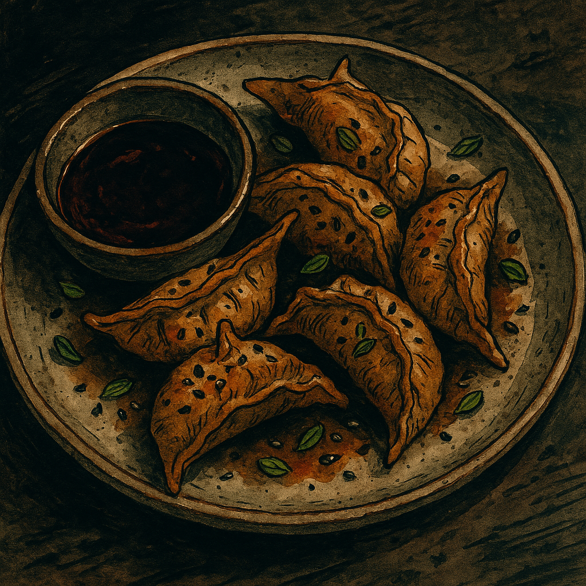

Daggerfang Dumplings

Sharp, sizzling, and always suspect.
Description
A staple of Odin’s late-night “Don’t Ask” menu, Daggerfang Dumplings are fried golden and filled with whatever the alley witches are peddling this week. Most nights, that’s a savory blend of spiced mushrooms or Impossible meat, simmered in dark aromatics and bound with witch oil (sesame, garlic, and mischief). The sharp, toothy shape of each dumpling hints at its namesake, while the dipping sauce—known as Blood Soy—carries a rich, umami-laden bite laced with chili oil and an unspoken warning. Order them in pairs—one for now, one for the gods.
Ingredients
For the filling:
- 1 cup finely chopped mushrooms (shiitake or cremini) or 1 cup cooked Impossible meat
- 1 tbsp sesame oil
- 2 garlic cloves, minced
- 1 tsp ginger, grated
- 2 green onions, chopped
- 1 tbsp soy sauce
- 1/2 tsp five spice powder (or shadowroot dust, if available)
- 1 tsp chili paste or sriracha (optional)
- Salt and pepper to taste
For the wrappers:
- 20 dumpling wrappers (round or square—“teeth-shaped” edges are encouraged)
- Small bowl of water (for sealing)
For the Blood Soy Sauce
- 2 tbsp soy sauce
- 1 tbsp rice vinegar
- 1 tsp maple syrup or agave
- 1 tsp chili oil (hellfire optional)
- Optional: a few drops of beet juice or pomegranate for color (adds that bloody hue)
For cooking:
- 1–2 tbsp oil (for pan frying)
- Splash of water (to steam)
Instructions
- Conjure the filling: Heat sesame oil in a pan over medium heat. Sauté garlic, ginger, and green onion until fragrant. Add mushrooms or Impossible meat, soy sauce, five spice, and chili paste. Cook until the mixture is deeply browned and fragrant. Set aside to cool.
- Assemble your daggers: Place 1 tsp of filling in the center of a dumpling wrapper. Wet the edges with water and fold tightly into half-moons or pleats. Press the edges to seal—if they look like sharp teeth, you're doing it right. Repeat until all the filling is used.
- Sear and steam: Heat oil in a skillet over medium heat. Place dumplings flat side down and cook until the bottoms are golden and crisp (2–3 minutes). Add a splash of water and cover with a lid to steam for 3–5 minutes, until the wrappers are tender and slightly translucent.
- Make the blood: Whisk together the soy sauce, vinegar, syrup, chili oil, and optional beet or pomegranate juice. Adjust heat level to taste. It should be deep red, a little sweet, and slightly dangerous.
- Serve hot, and don’t ask questions: Plate the dumplings on cracked ceramic, drizzle with a bit of the blood soy, or serve on the side. Garnish with sesame seeds, sliced green onions, or arcane symbols drawn in sauce.
Home